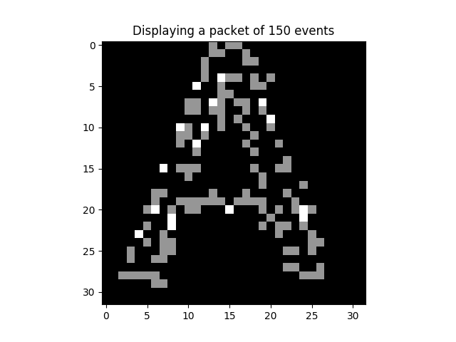

<!DOCTYPE html>
<!--[if IE 8]><html class="no-js lt-ie9" lang="en" > <![endif]-->
<!--[if gt IE 8]><!--> <html class="no-js" lang="en" > <!--<![endif]-->
<head>
  <meta charset="utf-8">
  
  <meta name="viewport" content="width=device-width, initial-scale=1.0">
  
  <title>Learning and inference on Characters DVS &mdash; Akida Examples  documentation</title>
  

  
  
    <link rel="shortcut icon" href="../../_static/favicon.ico"/>
  
  
  

  
  <script type="text/javascript" src="../../_static/js/modernizr.min.js"></script>
  
    
      <script type="text/javascript" id="documentation_options" data-url_root="../../" src="../../_static/documentation_options.js"></script>
        <script type="text/javascript" src="../../_static/jquery.js"></script>
        <script type="text/javascript" src="../../_static/underscore.js"></script>
        <script type="text/javascript" src="../../_static/doctools.js"></script>
        <script type="text/javascript" src="../../_static/language_data.js"></script>
    
    <script type="text/javascript" src="../../_static/js/theme.js"></script>

    

  
  <link rel="stylesheet" href="../../_static/css/theme.css" type="text/css" />
  <link rel="stylesheet" href="../../_static/pygments.css" type="text/css" />
  <link rel="stylesheet" href="../../_static/gallery.css" type="text/css" />
    <link rel="index" title="Index" href="../../genindex.html" />
    <link rel="search" title="Search" href="../../search.html" />
    <link rel="next" title="Learning and inference on NSL-KDD" href="plot_nslkdd_main.html" />
    <link rel="prev" title="Learning and inference on MNIST" href="plot_mnist_main.html" /> 
</head>

<body class="wy-body-for-nav">

   
  <div class="wy-grid-for-nav">
    
    <nav data-toggle="wy-nav-shift" class="wy-nav-side">
      <div class="wy-side-scroll">
        <div class="wy-side-nav-search"  style="background: #3f51b5" >
          

          
            <a href="../../index.html">
          

          
            
            
          
          </a>

          
            
            
              <div class="version">
                1.7.4
              </div>
            
          

          
<div role="search">
  <form id="rtd-search-form" class="wy-form" action="../../search.html" method="get">
    <input type="text" name="q" placeholder="Search docs" />
    <input type="hidden" name="check_keywords" value="yes" />
    <input type="hidden" name="area" value="default" />
  </form>
</div>

          
        </div>

        <div class="wy-menu wy-menu-vertical" data-spy="affix" role="navigation" aria-label="main navigation">
          
            
            
              
            
            
              <ul class="current">
<li class="toctree-l1"><a class="reference internal" href="../../index.html">Overview</a></li>
<li class="toctree-l1"><a class="reference internal" href="../../installation.html">Installation</a><ul>
<li class="toctree-l2"><a class="reference internal" href="../../installation.html#requirements">Requirements</a></li>
<li class="toctree-l2"><a class="reference internal" href="../../installation.html#quick-installation">Quick installation</a></li>
<li class="toctree-l2"><a class="reference internal" href="../../installation.html#running-examples">Running examples</a></li>
</ul>
</li>
<li class="toctree-l1"><a class="reference internal" href="../../user_guide/user_guide.html">User guide</a><ul>
<li class="toctree-l2"><a class="reference internal" href="../../user_guide/getting_started.html">Getting started</a><ul>
<li class="toctree-l3"><a class="reference internal" href="../../user_guide/getting_started.html#for-beginners">For beginners</a></li>
<li class="toctree-l3"><a class="reference internal" href="../../user_guide/getting_started.html#for-users-familiar-with-deep-learning">For users familiar with deep-learning</a></li>
</ul>
</li>
<li class="toctree-l2"><a class="reference internal" href="../../user_guide/aee.html">Akida user guide</a><ul>
<li class="toctree-l3"><a class="reference internal" href="../../user_guide/aee.html#the-akida-execution-engine">The Akida Execution Engine</a><ul>
<li class="toctree-l4"><a class="reference internal" href="../../user_guide/aee.html#id1">1. The Spiking Neural Network model</a></li>
<li class="toctree-l4"><a class="reference internal" href="../../user_guide/aee.html#id2">2. Input data format</a></li>
<li class="toctree-l4"><a class="reference internal" href="../../user_guide/aee.html#id3">3. Determine training mode</a></li>
<li class="toctree-l4"><a class="reference internal" href="../../user_guide/aee.html#id4">4. Interpreting outputs</a></li>
</ul>
</li>
<li class="toctree-l3"><a class="reference internal" href="../../user_guide/aee.html#neural-network-model">Neural Network model</a><ul>
<li class="toctree-l4"><a class="reference internal" href="../../user_guide/aee.html#specifying-the-neural-network-model">Specifying the Neural Network model</a></li>
<li class="toctree-l4"><a class="reference internal" href="../../user_guide/aee.html#saving-and-loading">Saving and loading</a></li>
<li class="toctree-l4"><a class="reference internal" href="../../user_guide/aee.html#input-layer-types">Input layer types</a></li>
<li class="toctree-l4"><a class="reference internal" href="../../user_guide/aee.html#data-processing-layer-types">Data-Processing layer types</a></li>
</ul>
</li>
<li class="toctree-l3"><a class="reference internal" href="../../user_guide/aee.html#id5">Using Akida Unsupervised Learning</a><ul>
<li class="toctree-l4"><a class="reference internal" href="../../user_guide/aee.html#learning-constraints">Learning constraints</a></li>
<li class="toctree-l4"><a class="reference internal" href="../../user_guide/aee.html#compiling-a-layer">Compiling a layer</a></li>
<li class="toctree-l4"><a class="reference internal" href="../../user_guide/aee.html#id7">Learning parameters</a></li>
</ul>
</li>
</ul>
</li>
<li class="toctree-l2"><a class="reference internal" href="../../user_guide/cnn2snn.html">CNN2SNN toolkit</a><ul>
<li class="toctree-l3"><a class="reference internal" href="../../user_guide/cnn2snn.html#overview">Overview</a><ul>
<li class="toctree-l4"><a class="reference internal" href="../../user_guide/cnn2snn.html#conversion-workflow">Conversion Workflow</a></li>
<li class="toctree-l4"><a class="reference internal" href="../../user_guide/cnn2snn.html#compatibility-constraints">Compatibility Constraints</a></li>
<li class="toctree-l4"><a class="reference internal" href="../../user_guide/cnn2snn.html#typical-training-scenario">Typical training scenario</a></li>
</ul>
</li>
<li class="toctree-l3"><a class="reference internal" href="../../user_guide/cnn2snn.html#layers-considerations">Layers Considerations</a><ul>
<li class="toctree-l4"><a class="reference internal" href="../../user_guide/cnn2snn.html#supported-layer-types">Supported layer types</a></li>
<li class="toctree-l4"><a class="reference internal" href="../../user_guide/cnn2snn.html#quantization-aware-layers">Quantization-aware layers</a></li>
<li class="toctree-l4"><a class="reference internal" href="../../user_guide/cnn2snn.html#training-only-layers">Training-Only Layers</a></li>
<li class="toctree-l4"><a class="reference internal" href="../../user_guide/cnn2snn.html#first-layers">First Layers</a></li>
<li class="toctree-l4"><a class="reference internal" href="../../user_guide/cnn2snn.html#id6">Final Layers</a></li>
</ul>
</li>
<li class="toctree-l3"><a class="reference internal" href="../../user_guide/cnn2snn.html#layer-blocks">Layer Blocks</a><ul>
<li class="toctree-l4"><a class="reference internal" href="../../user_guide/cnn2snn.html#id7">Overview</a></li>
<li class="toctree-l4"><a class="reference internal" href="../../user_guide/cnn2snn.html#conv-block"><code class="docutils literal notranslate"><span class="pre">conv_block</span></code></a></li>
<li class="toctree-l4"><a class="reference internal" href="../../user_guide/cnn2snn.html#dense-block"><code class="docutils literal notranslate"><span class="pre">dense_block</span></code></a></li>
<li class="toctree-l4"><a class="reference internal" href="../../user_guide/cnn2snn.html#separable-conv-block"><code class="docutils literal notranslate"><span class="pre">separable_conv_block</span></code></a></li>
</ul>
</li>
<li class="toctree-l3"><a class="reference internal" href="../../user_guide/cnn2snn.html#tips-and-tricks">Tips and Tricks</a></li>
</ul>
</li>
<li class="toctree-l2"><a class="reference internal" href="../../user_guide/hw_constraints.html">Hardware constraints</a><ul>
<li class="toctree-l3"><a class="reference internal" href="../../user_guide/hw_constraints.html#input-layer">Input layer</a></li>
<li class="toctree-l3"><a class="reference internal" href="../../user_guide/hw_constraints.html#data-processing-layers">Data-Processing layers</a><ul>
<li class="toctree-l4"><a class="reference internal" href="../../user_guide/hw_constraints.html#convolutional-layer">Convolutional layer</a></li>
<li class="toctree-l4"><a class="reference internal" href="../../user_guide/hw_constraints.html#fully-connected-layer">Fully connected layer</a></li>
</ul>
</li>
</ul>
</li>
</ul>
</li>
<li class="toctree-l1"><a class="reference internal" href="../../api_reference/api_reference.html">API reference</a><ul>
<li class="toctree-l2"><a class="reference internal" href="../../api_reference/aee_apis.html">Akida Execution Engine</a><ul>
<li class="toctree-l3"><a class="reference internal" href="../../api_reference/aee_apis.html#model">Model</a></li>
<li class="toctree-l3"><a class="reference internal" href="../../api_reference/aee_apis.html#layer">Layer</a></li>
<li class="toctree-l3"><a class="reference internal" href="../../api_reference/aee_apis.html#layerstatistics">LayerStatistics</a></li>
<li class="toctree-l3"><a class="reference internal" href="../../api_reference/aee_apis.html#observer">Observer</a></li>
<li class="toctree-l3"><a class="reference internal" href="../../api_reference/aee_apis.html#inputdata">InputData</a></li>
<li class="toctree-l3"><a class="reference internal" href="../../api_reference/aee_apis.html#inputconvolutional">InputConvolutional</a></li>
<li class="toctree-l3"><a class="reference internal" href="../../api_reference/aee_apis.html#inputbcspike">InputBCSpike</a></li>
<li class="toctree-l3"><a class="reference internal" href="../../api_reference/aee_apis.html#fullyconnected">FullyConnected</a></li>
<li class="toctree-l3"><a class="reference internal" href="../../api_reference/aee_apis.html#convolutional">Convolutional</a></li>
<li class="toctree-l3"><a class="reference internal" href="../../api_reference/aee_apis.html#separableconvolutional">SeparableConvolutional</a></li>
<li class="toctree-l3"><a class="reference internal" href="../../api_reference/aee_apis.html#tensor">Tensor</a></li>
<li class="toctree-l3"><a class="reference internal" href="../../api_reference/aee_apis.html#sparse">Sparse</a></li>
<li class="toctree-l3"><a class="reference internal" href="../../api_reference/aee_apis.html#coords-to-sparse">coords_to_sparse</a></li>
<li class="toctree-l3"><a class="reference internal" href="../../api_reference/aee_apis.html#dense-to-sparse">dense_to_sparse</a></li>
<li class="toctree-l3"><a class="reference internal" href="../../api_reference/aee_apis.html#backendtype">BackendType</a></li>
<li class="toctree-l3"><a class="reference internal" href="../../api_reference/aee_apis.html#convolutionmode">ConvolutionMode</a></li>
<li class="toctree-l3"><a class="reference internal" href="../../api_reference/aee_apis.html#poolingtype">PoolingType</a></li>
<li class="toctree-l3"><a class="reference internal" href="../../api_reference/aee_apis.html#learningtype">LearningType</a></li>
</ul>
</li>
<li class="toctree-l2"><a class="reference internal" href="../../api_reference/cnn2snn_apis.html">CNN2SNN</a><ul>
<li class="toctree-l3"><a class="reference internal" href="../../api_reference/cnn2snn_apis.html#convert">convert</a></li>
<li class="toctree-l3"><a class="reference internal" href="../../api_reference/cnn2snn_apis.html#check-model-compatibility">check_model_compatibility</a></li>
<li class="toctree-l3"><a class="reference internal" href="../../api_reference/cnn2snn_apis.html#weightquantizer">WeightQuantizer</a></li>
<li class="toctree-l3"><a class="reference internal" href="../../api_reference/cnn2snn_apis.html#weightfloat">WeightFloat</a></li>
<li class="toctree-l3"><a class="reference internal" href="../../api_reference/cnn2snn_apis.html#quantizedconv2d">QuantizedConv2D</a></li>
<li class="toctree-l3"><a class="reference internal" href="../../api_reference/cnn2snn_apis.html#quantizeddepthwiseconv2d">QuantizedDepthwiseConv2D</a></li>
<li class="toctree-l3"><a class="reference internal" href="../../api_reference/cnn2snn_apis.html#quantizeddense">QuantizedDense</a></li>
<li class="toctree-l3"><a class="reference internal" href="../../api_reference/cnn2snn_apis.html#quantizedseparableconv2d">QuantizedSeparableConv2D</a></li>
<li class="toctree-l3"><a class="reference internal" href="../../api_reference/cnn2snn_apis.html#activationdiscreterelu">ActivationDiscreteRelu</a></li>
</ul>
</li>
<li class="toctree-l2"><a class="reference internal" href="../../api_reference/akida_models_apis.html">Akida models</a><ul>
<li class="toctree-l3"><a class="reference internal" href="../../api_reference/akida_models_apis.html#quantization-blocks">Quantization blocks</a><ul>
<li class="toctree-l4"><a class="reference internal" href="../../api_reference/akida_models_apis.html#conv-block">conv_block</a></li>
<li class="toctree-l4"><a class="reference internal" href="../../api_reference/akida_models_apis.html#separable-conv-block">separable_conv_block</a></li>
<li class="toctree-l4"><a class="reference internal" href="../../api_reference/akida_models_apis.html#dense-block">dense_block</a></li>
</ul>
</li>
<li class="toctree-l3"><a class="reference internal" href="../../api_reference/akida_models_apis.html#model-zoo">Model zoo</a><ul>
<li class="toctree-l4"><a class="reference internal" href="../../api_reference/akida_models_apis.html#mobilenet">Mobilenet</a></li>
<li class="toctree-l4"><a class="reference internal" href="../../api_reference/akida_models_apis.html#vgg">VGG</a></li>
</ul>
</li>
</ul>
</li>
</ul>
</li>
<li class="toctree-l1 current"><a class="reference internal" href="../index.html">Examples</a><ul class="current">
<li class="toctree-l2"><a class="reference internal" href="../index.html#cnn2snn">CNN2SNN</a><ul>
<li class="toctree-l3"><a class="reference internal" href="../cnn2snn/plot_mnist_cnn2akida_main.html">Inference on MNIST</a><ul>
<li class="toctree-l4"><a class="reference internal" href="../cnn2snn/plot_mnist_cnn2akida_main.html#loading-the-mnist-dataset">1. Loading the MNIST dataset</a></li>
<li class="toctree-l4"><a class="reference internal" href="../cnn2snn/plot_mnist_cnn2akida_main.html#look-at-some-images-from-the-test-dataset">2. Look at some images from the test dataset</a></li>
<li class="toctree-l4"><a class="reference internal" href="../cnn2snn/plot_mnist_cnn2akida_main.html#load-the-pre-trained-akida-model">3. Load the pre-trained Akida model</a></li>
<li class="toctree-l4"><a class="reference internal" href="../cnn2snn/plot_mnist_cnn2akida_main.html#classify-a-single-image">4. Classify a single image</a></li>
<li class="toctree-l4"><a class="reference internal" href="../cnn2snn/plot_mnist_cnn2akida_main.html#check-performance-across-a-number-of-samples">5. Check performance across a number of samples</a></li>
</ul>
</li>
<li class="toctree-l3"><a class="reference internal" href="../cnn2snn/plot_mobilenet_kws.html">Inference on KWS with MobileNet</a><ul>
<li class="toctree-l4"><a class="reference internal" href="../cnn2snn/plot_mobilenet_kws.html#load-cnn2snn-tool-dependencies">1. Load CNN2SNN tool dependencies</a></li>
<li class="toctree-l4"><a class="reference internal" href="../cnn2snn/plot_mobilenet_kws.html#load-the-preprocessed-dataset">2. Load the preprocessed dataset</a></li>
<li class="toctree-l4"><a class="reference internal" href="../cnn2snn/plot_mobilenet_kws.html#create-a-keras-model-satisfying-akida-nsoc-requirements">3. Create a Keras model satisfying Akida NSoC requirements</a></li>
<li class="toctree-l4"><a class="reference internal" href="../cnn2snn/plot_mobilenet_kws.html#check-performance">4. Check performance</a></li>
<li class="toctree-l4"><a class="reference internal" href="../cnn2snn/plot_mobilenet_kws.html#conversion-to-akida">5. Conversion to Akida</a></li>
</ul>
</li>
<li class="toctree-l3"><a class="reference internal" href="../cnn2snn/plot_cifar10_cnn2akida_demo.html">Inference on CIFAR10 with VGG and MobileNet</a><ul>
<li class="toctree-l4"><a class="reference internal" href="../cnn2snn/plot_cifar10_cnn2akida_demo.html#load-cnn2snn-tool-dependencies">1. Load CNN2SNN tool dependencies</a></li>
<li class="toctree-l4"><a class="reference internal" href="../cnn2snn/plot_cifar10_cnn2akida_demo.html#load-and-reshape-cifar10-dataset">2. Load and reshape CIFAR10 dataset</a></li>
<li class="toctree-l4"><a class="reference internal" href="../cnn2snn/plot_cifar10_cnn2akida_demo.html#create-a-quantized-keras-vgg-model">3. Create a quantized Keras VGG model</a></li>
<li class="toctree-l4"><a class="reference internal" href="../cnn2snn/plot_cifar10_cnn2akida_demo.html#conversion-to-akida">4. Conversion to Akida</a></li>
<li class="toctree-l4"><a class="reference internal" href="../cnn2snn/plot_cifar10_cnn2akida_demo.html#create-a-quantized-keras-mobilenet-model">5. Create a quantized Keras MobileNet model</a></li>
<li class="toctree-l4"><a class="reference internal" href="../cnn2snn/plot_cifar10_cnn2akida_demo.html#id2">6. Conversion to Akida</a></li>
</ul>
</li>
<li class="toctree-l3"><a class="reference internal" href="../cnn2snn/plot_cats_vs_dogs_cnn2akida_demo.html">Transfer learning with MobileNet for cats vs. dogs</a><ul>
<li class="toctree-l4"><a class="reference internal" href="../cnn2snn/plot_cats_vs_dogs_cnn2akida_demo.html#transfer-learning-process">1. Transfer learning process</a></li>
<li class="toctree-l4"><a class="reference internal" href="../cnn2snn/plot_cats_vs_dogs_cnn2akida_demo.html#load-and-preprocess-data">2. Load and preprocess data</a></li>
<li class="toctree-l4"><a class="reference internal" href="../cnn2snn/plot_cats_vs_dogs_cnn2akida_demo.html#convert-a-quantized-keras-model-to-akida">3. Convert a quantized Keras model to Akida</a></li>
<li class="toctree-l4"><a class="reference internal" href="../cnn2snn/plot_cats_vs_dogs_cnn2akida_demo.html#classify-test-images">4. Classify test images</a></li>
</ul>
</li>
<li class="toctree-l3"><a class="reference internal" href="../cnn2snn/plot_mobilenet_imagenet.html">Inference on ImageNet with MobileNet</a><ul>
<li class="toctree-l4"><a class="reference internal" href="../cnn2snn/plot_mobilenet_imagenet.html#load-cnn2snn-tool-dependencies">1. Load CNN2SNN tool dependencies</a></li>
<li class="toctree-l4"><a class="reference internal" href="../cnn2snn/plot_mobilenet_imagenet.html#load-test-images-from-imagenet">2. Load test images from ImageNet</a></li>
<li class="toctree-l4"><a class="reference internal" href="../cnn2snn/plot_mobilenet_imagenet.html#create-a-quantized-keras-model">3. Create a quantized Keras model</a></li>
<li class="toctree-l4"><a class="reference internal" href="../cnn2snn/plot_mobilenet_imagenet.html#convert-keras-model-for-akida-nsoc">4. Convert Keras model for Akida NSoC</a></li>
</ul>
</li>
<li class="toctree-l3"><a class="reference internal" href="../cnn2snn/plot_mnist_cnn2akida_demo.html">CNN conversion flow tutorial for MNIST</a><ul>
<li class="toctree-l4"><a class="reference internal" href="../cnn2snn/plot_mnist_cnn2akida_demo.html#system-configuration">1. System configuration</a></li>
<li class="toctree-l4"><a class="reference internal" href="../cnn2snn/plot_mnist_cnn2akida_demo.html#model-creation-and-performance-check">2. Model creation and performance check</a></li>
<li class="toctree-l4"><a class="reference internal" href="../cnn2snn/plot_mnist_cnn2akida_demo.html#model-akida-compatibility-check-and-changes">3. Model Akida-compatibility check and changes</a></li>
<li class="toctree-l4"><a class="reference internal" href="../cnn2snn/plot_mnist_cnn2akida_demo.html#model-quantization-and-training">4. Model quantization and training</a></li>
<li class="toctree-l4"><a class="reference internal" href="../cnn2snn/plot_mnist_cnn2akida_demo.html#convert-trained-model-for-akida-and-test">5. Convert trained model for Akida and test</a></li>
</ul>
</li>
</ul>
</li>
<li class="toctree-l2 current"><a class="reference internal" href="../index.html#semisupervised">Semisupervised</a><ul class="current">
<li class="toctree-l3"><a class="reference internal" href="plot_mnist_main.html">Learning and inference on MNIST</a><ul>
<li class="toctree-l4"><a class="reference internal" href="plot_mnist_main.html#loading-the-mnist-dataset">1. Loading the MNIST dataset</a></li>
<li class="toctree-l4"><a class="reference internal" href="plot_mnist_main.html#look-at-some-images-from-the-dataset">2. Look at some images from the dataset</a></li>
<li class="toctree-l4"><a class="reference internal" href="plot_mnist_main.html#configuring-akida-model">3. Configuring Akida model</a></li>
<li class="toctree-l4"><a class="reference internal" href="plot_mnist_main.html#testing-performance">4. Testing performance</a></li>
<li class="toctree-l4"><a class="reference internal" href="plot_mnist_main.html#learning-and-inference">5. Learning and inference</a></li>
</ul>
</li>
<li class="toctree-l3 current"><a class="current reference internal" href="#">Learning and inference on Characters DVS</a><ul>
<li class="toctree-l4"><a class="reference internal" href="#loading-the-characters-dvs-dataset">1. Loading the Characters DVS dataset</a></li>
<li class="toctree-l4"><a class="reference internal" href="#look-at-some-events-from-the-dataset">2. Look at some events from the dataset</a></li>
<li class="toctree-l4"><a class="reference internal" href="#configuring-akida-model">3. Configuring Akida model</a></li>
<li class="toctree-l4"><a class="reference internal" href="#learning-and-inference">4. Learning and inference</a></li>
<li class="toctree-l4"><a class="reference internal" href="#unsupervised-learning-with-supervised-classification">5. Unsupervised learning with supervised classification</a></li>
</ul>
</li>
<li class="toctree-l3"><a class="reference internal" href="plot_nslkdd_main.html">Learning and inference on NSL-KDD</a><ul>
<li class="toctree-l4"><a class="reference internal" href="plot_nslkdd_main.html#download-and-prepare-the-nsl-kdd-dataset">1. Download and prepare the NSL-KDD dataset</a></li>
<li class="toctree-l4"><a class="reference internal" href="plot_nslkdd_main.html#sneak-peek-of-the-input-tabular-data">2. Sneak peek of the input tabular data</a></li>
<li class="toctree-l4"><a class="reference internal" href="plot_nslkdd_main.html#convert-from-tabular-to-binary-data">3. Convert from tabular to binary data</a></li>
<li class="toctree-l4"><a class="reference internal" href="plot_nslkdd_main.html#oversampling-the-training-data-to-cope-with-imbalanced-dataset">4. Oversampling the training data to cope with imbalanced dataset</a></li>
<li class="toctree-l4"><a class="reference internal" href="plot_nslkdd_main.html#configuring-akida-model">5. Configuring Akida model</a></li>
<li class="toctree-l4"><a class="reference internal" href="plot_nslkdd_main.html#learning-and-inference">6. Learning and inference</a></li>
<li class="toctree-l4"><a class="reference internal" href="plot_nslkdd_main.html#display-results">7. Display results</a></li>
</ul>
</li>
</ul>
</li>
<li class="toctree-l2"><a class="reference internal" href="../index.html#unsupervised">Unsupervised</a><ul>
<li class="toctree-l3"><a class="reference internal" href="../unsupervised/plot_unsupervised_main.html">Native learning for pattern detection</a><ul>
<li class="toctree-l4"><a class="reference internal" href="../unsupervised/plot_unsupervised_main.html#creating-the-dataset">1. Creating the dataset</a></li>
<li class="toctree-l4"><a class="reference internal" href="../unsupervised/plot_unsupervised_main.html#creating-random-dot-images">2. Creating random dot images</a></li>
<li class="toctree-l4"><a class="reference internal" href="../unsupervised/plot_unsupervised_main.html#take-a-look-at-some-of-the-random-dots-images">3. Take a look at some of the random dots images</a></li>
<li class="toctree-l4"><a class="reference internal" href="../unsupervised/plot_unsupervised_main.html#configuring-the-akida-model">4. Configuring the Akida model</a></li>
<li class="toctree-l4"><a class="reference internal" href="../unsupervised/plot_unsupervised_main.html#do-the-learning">5. Do the learning</a></li>
<li class="toctree-l4"><a class="reference internal" href="../unsupervised/plot_unsupervised_main.html#test-the-performance">6. Test the performance</a></li>
</ul>
</li>
</ul>
</li>
</ul>
</li>
<li class="toctree-l1"><a class="reference external" href="https://support.brainchip.com/portal/home">Support</a></li>
<li class="toctree-l1"><a class="reference internal" href="../../license.html">License</a></li>
</ul>

            
          
        </div>
      </div>
    </nav>

    <section data-toggle="wy-nav-shift" class="wy-nav-content-wrap">

      
      <nav class="wy-nav-top" aria-label="top navigation">
        
          <i data-toggle="wy-nav-top" class="fa fa-bars"></i>
          <a href="../../index.html">Akida Examples</a>
        
      </nav>


      <div class="wy-nav-content">
        
        <div class="rst-content">
        
          


<div role="navigation" aria-label="breadcrumbs navigation">

  <ul class="wy-breadcrumbs">
    
      <li><a href="../../index.html">Docs</a> &raquo;</li>
        
          <li><a href="../index.html">Akida examples</a> &raquo;</li>
        
      <li>Learning and inference on Characters DVS</li>
    
    
      <li class="wy-breadcrumbs-aside">
        
            
        
      </li>
    
  </ul>

  
  <hr/>
</div>
          <div role="main" class="document" itemscope="itemscope" itemtype="http://schema.org/Article">
           <div itemprop="articleBody">
            
  <div class="sphx-glr-download-link-note admonition note">
<p class="admonition-title">Note</p>
<p>Click <a class="reference internal" href="#sphx-glr-download-examples-semisupervised-plot-dvs-main-py"><span class="std std-ref">here</span></a> to download the full example code</p>
</div>
<div class="sphx-glr-example-title section" id="learning-and-inference-on-characters-dvs">
<span id="sphx-glr-examples-semisupervised-plot-dvs-main-py"></span><h1>Learning and inference on Characters DVS<a class="headerlink" href="#learning-and-inference-on-characters-dvs" title="Permalink to this headline">¶</a></h1>
<p>The Characters_DVS dataset comprises a set of recordings made using a
Dynamic Vision Sensor (DVS). This is a type of event-based camera, where
each event indicates the lightening or darkening of a given pixel at a
specific time. The stimuli are the 36 (latin) alphanumeric characters,
printed on paper and affixed to a rotating drum so that they drift
across the camera’s field of view. The dataset includes 2 samples for
each character. For a full description of the dataset, see <a class="reference external" href="https://www.researchgate.net/publication/273308877_HFirst_A_Temporal_Approach_to_Object_Recognition">Orchard et
al, (2015), doi:10.1109/TPAMI.2015.2392947</a>.</p>
<p>For this simple demonstration, we use the ExtractedStabilized version of
the dataset, where, rather than use the full 128 x 128 pixel scene,
activity related to individual characters has been extracted and
centered in a 32 x 32 pixel scene.</p>
<p>Each DVS event is characterized by 3 values: x- and y-coordinates, and
the polarity of the luminance change (increment or decrement). Note that
in the current demo, we’ve discarded the polarity information for
simplicity (and because it’s not useful in a task where we’re only
interested in object shape and not direction of movement).</p>
<div class="section" id="loading-the-characters-dvs-dataset">
<h2>1. Loading the Characters DVS dataset<a class="headerlink" href="#loading-the-characters-dvs-dataset" title="Permalink to this headline">¶</a></h2>
<div class="highlight-default notranslate"><div class="highlight"><pre><span></span><span class="c1"># Various imports needed for the tutorial</span>
<span class="kn">import</span> <span class="nn">os</span>

<span class="kn">import</span> <span class="nn">numpy</span> <span class="k">as</span> <span class="nn">np</span>
<span class="kn">import</span> <span class="nn">matplotlib.cm</span> <span class="k">as</span> <span class="nn">cm</span>
<span class="kn">import</span> <span class="nn">matplotlib.pyplot</span> <span class="k">as</span> <span class="nn">plt</span>
<span class="kn">import</span> <span class="nn">warnings</span>
<span class="kn">from</span> <span class="nn">tensorflow.keras.utils</span> <span class="kn">import</span> <span class="n">get_file</span>
<span class="kn">import</span> <span class="nn">csv</span>

<span class="c1"># Filter warnings</span>
<span class="n">warnings</span><span class="o">.</span><span class="n">filterwarnings</span><span class="p">(</span><span class="s2">&quot;ignore&quot;</span><span class="p">,</span> <span class="n">module</span><span class="o">=</span><span class="s2">&quot;matplotlib&quot;</span><span class="p">)</span>

<span class="c1"># Akida specific imports</span>
<span class="kn">from</span> <span class="nn">akida</span> <span class="kn">import</span> <span class="n">Model</span><span class="p">,</span> <span class="n">Sparse</span><span class="p">,</span> <span class="n">InputData</span><span class="p">,</span> <span class="n">FullyConnected</span><span class="p">,</span> <span class="n">LearningType</span><span class="p">,</span> <span class="n">coords_to_sparse</span>
</pre></div>
</div>
<div class="highlight-default notranslate"><div class="highlight"><pre><span></span><span class="c1"># Retrieve Characters DVS data set</span>
<span class="n">file_path</span> <span class="o">=</span> <span class="n">get_file</span><span class="p">(</span><span class="s2">&quot;CharDVS.tar.gz&quot;</span><span class="p">,</span> <span class="s2">&quot;http://data.brainchip.com/dataset-mirror/charDVS/CharDVS.tar.gz&quot;</span><span class="p">,</span> <span class="n">cache_subdir</span><span class="o">=</span><span class="s1">&#39;datasets/charDVS&#39;</span><span class="p">,</span> <span class="n">extract</span><span class="o">=</span><span class="kc">True</span><span class="p">)</span>
<span class="n">working_dir</span> <span class="o">=</span> <span class="n">os</span><span class="o">.</span><span class="n">path</span><span class="o">.</span><span class="n">dirname</span><span class="p">(</span><span class="n">file_path</span><span class="p">)</span>

<span class="n">datafilenames</span> <span class="o">=</span> <span class="p">[]</span>
<span class="n">dvs_labels</span> <span class="o">=</span> <span class="p">[]</span>
<span class="n">lbl_filepath</span> <span class="o">=</span> <span class="n">os</span><span class="o">.</span><span class="n">path</span><span class="o">.</span><span class="n">join</span><span class="p">(</span><span class="n">working_dir</span><span class="p">,</span> <span class="s2">&quot;CharDVS_data&quot;</span><span class="p">,</span> <span class="s2">&quot;CharDVS_labels.csv&quot;</span><span class="p">)</span>
<span class="k">if</span> <span class="n">os</span><span class="o">.</span><span class="n">path</span><span class="o">.</span><span class="n">exists</span><span class="p">(</span><span class="n">lbl_filepath</span><span class="p">):</span>
    <span class="k">with</span> <span class="nb">open</span><span class="p">(</span><span class="n">lbl_filepath</span><span class="p">,</span> <span class="s1">&#39;r&#39;</span><span class="p">)</span> <span class="k">as</span> <span class="n">csvfile</span><span class="p">:</span>
        <span class="n">csvreader</span> <span class="o">=</span> <span class="n">csv</span><span class="o">.</span><span class="n">reader</span><span class="p">(</span><span class="n">csvfile</span><span class="p">,</span> <span class="n">delimiter</span><span class="o">=</span><span class="s1">&#39;,&#39;</span><span class="p">)</span>
        <span class="k">for</span> <span class="n">row</span> <span class="ow">in</span> <span class="n">csvreader</span><span class="p">:</span>
            <span class="n">datafilenames</span><span class="o">.</span><span class="n">append</span><span class="p">(</span><span class="n">row</span><span class="p">[</span><span class="mi">0</span><span class="p">])</span>
            <span class="n">dvs_labels</span><span class="o">.</span><span class="n">append</span><span class="p">(</span><span class="n">row</span><span class="p">[</span><span class="mi">1</span><span class="p">])</span>
<span class="k">else</span><span class="p">:</span>
    <span class="nb">print</span><span class="p">(</span><span class="s2">&quot;Failed to find labels file &quot;</span> <span class="o">+</span> <span class="n">lbl_filepath</span><span class="p">)</span>

<span class="n">dvs_events</span> <span class="o">=</span> <span class="p">[]</span>
<span class="k">for</span> <span class="n">fn</span> <span class="ow">in</span> <span class="n">datafilenames</span><span class="p">[:]:</span>
    <span class="n">fname</span> <span class="o">=</span> <span class="n">os</span><span class="o">.</span><span class="n">path</span><span class="o">.</span><span class="n">join</span><span class="p">(</span><span class="n">working_dir</span><span class="p">,</span> <span class="s2">&quot;CharDVS_data&quot;</span><span class="p">,</span> <span class="n">fn</span><span class="p">)</span>
    <span class="k">if</span> <span class="n">os</span><span class="o">.</span><span class="n">path</span><span class="o">.</span><span class="n">exists</span><span class="p">(</span><span class="n">fname</span><span class="p">):</span>
        <span class="n">dvs_events</span><span class="o">.</span><span class="n">append</span><span class="p">(</span><span class="n">np</span><span class="o">.</span><span class="n">genfromtxt</span><span class="p">(</span><span class="n">fname</span><span class="p">,</span> <span class="n">dtype</span><span class="o">=</span><span class="n">np</span><span class="o">.</span><span class="n">int32</span><span class="p">,</span> <span class="n">delimiter</span><span class="o">=</span><span class="s1">&#39;,&#39;</span><span class="p">))</span>
    <span class="k">else</span><span class="p">:</span>
        <span class="nb">print</span><span class="p">(</span><span class="s2">&quot;Failed to find data file &quot;</span> <span class="o">+</span> <span class="n">fname</span><span class="p">)</span>

<span class="c1"># Using 32 x 32 images</span>
<span class="n">dvs_sz</span> <span class="o">=</span> <span class="p">(</span><span class="mi">32</span><span class="p">,</span> <span class="mi">32</span><span class="p">)</span>
<span class="n">dvs_shape</span> <span class="o">=</span> <span class="p">(</span><span class="o">*</span><span class="n">dvs_sz</span><span class="p">,</span> <span class="mi">1</span><span class="p">)</span>
</pre></div>
</div>
<p class="sphx-glr-script-out">Out:</p>
<div class="sphx-glr-script-out highlight-none notranslate"><div class="highlight"><pre><span></span>Downloading data from http://data.brainchip.com/dataset-mirror/charDVS/CharDVS.tar.gz

   8192/1982663 [..............................] - ETA: 3s
  81920/1982663 [&gt;.............................] - ETA: 1s
 671744/1982663 [=========&gt;....................] - ETA: 0s
1990656/1982663 [==============================] - 0s 0us/step
</pre></div>
</div>
</div>
<div class="section" id="look-at-some-events-from-the-dataset">
<h2>2. Look at some events from the dataset<a class="headerlink" href="#look-at-some-events-from-the-dataset" title="Permalink to this headline">¶</a></h2>
<p>As described above, each DVS event is characterized by 3 values.
Although we’ve discarded the polarity information, we’ve kept a third
channel for each event (always set to zero), because that’s the input
event format expected by the Akida Execution Engine.</p>
<div class="highlight-default notranslate"><div class="highlight"><pre><span></span><span class="c1"># Cherry-pick an abitrary event</span>
<span class="n">test_events</span> <span class="o">=</span> <span class="n">dvs_events</span><span class="p">[</span><span class="mi">27</span><span class="p">]</span>
<span class="nb">print</span><span class="p">(</span><span class="n">test_events</span><span class="p">[</span><span class="mi">1</span><span class="p">,:])</span>
</pre></div>
</div>
<p class="sphx-glr-script-out">Out:</p>
<div class="sphx-glr-script-out highlight-none notranslate"><div class="highlight"><pre><span></span>[22 25  0]
</pre></div>
</div>
<p>The Akida Execution Engine processes groups of events, which we’ll refer
to as ‘packets’. But how many events should be in a packet?</p>
<p>In the current case, it’s helpful to visualize the input data: we’re
going to want to group together enough events to generate recognizable
features, but without allowing too many duplicate events (multiple
events occurring at the same input location). Try varying the
packet_size in the following:</p>
<p>Note that this reconstruction of the events into an image is purely for
visualization here - this is not at all what happens inside the Akida
Execution Engine.</p>
<div class="highlight-default notranslate"><div class="highlight"><pre><span></span><span class="c1"># Displaying a &#39;packet&#39; of events as an image</span>
<span class="n">packet_size</span> <span class="o">=</span> <span class="mi">150</span>

<span class="n">test_img</span> <span class="o">=</span> <span class="n">np</span><span class="o">.</span><span class="n">zeros</span><span class="p">(</span><span class="n">dvs_sz</span><span class="p">,</span> <span class="n">dtype</span><span class="o">=</span><span class="n">np</span><span class="o">.</span><span class="n">int32</span><span class="p">)</span>
<span class="n">test_events</span> <span class="o">=</span> <span class="n">dvs_events</span><span class="p">[</span><span class="mi">27</span><span class="p">]</span>
<span class="n">xx</span> <span class="o">=</span> <span class="n">test_events</span><span class="p">[:</span><span class="n">packet_size</span><span class="p">,</span><span class="mi">0</span><span class="p">]</span>
<span class="n">yy</span> <span class="o">=</span> <span class="n">test_events</span><span class="p">[:</span><span class="n">packet_size</span><span class="p">,</span><span class="mi">1</span><span class="p">]</span>
<span class="k">for</span> <span class="n">i</span> <span class="ow">in</span> <span class="nb">range</span><span class="p">(</span><span class="n">packet_size</span><span class="p">):</span>
    <span class="n">test_img</span><span class="p">[</span><span class="n">yy</span><span class="p">[</span><span class="n">i</span><span class="p">],</span><span class="n">xx</span><span class="p">[</span><span class="n">i</span><span class="p">]]</span> <span class="o">+=</span> <span class="mi">1</span>

<span class="n">plt</span><span class="o">.</span><span class="n">imshow</span><span class="p">(</span><span class="n">test_img</span><span class="p">,</span> <span class="n">cmap</span><span class="o">=</span><span class="n">cm</span><span class="o">.</span><span class="n">Greys_r</span><span class="p">)</span>
<span class="n">plt</span><span class="o">.</span><span class="n">title</span><span class="p">(</span><span class="s1">&#39;Displaying a packet of </span><span class="si">%i</span><span class="s1"> events&#39;</span> <span class="o">%</span> <span class="n">packet_size</span><span class="p">)</span>
<span class="n">plt</span><span class="o">.</span><span class="n">show</span><span class="p">()</span>
</pre></div>
</div>

<p>Ultimately, this is a variable that can be optimized according to the
task.</p>
<p>Here, we’ll go forward with a packet_size of 150. You can try other
values.</p>
<div class="highlight-default notranslate"><div class="highlight"><pre><span></span><span class="c1"># Set packet size to 150 from now on</span>
<span class="n">packet_size</span> <span class="o">=</span> <span class="mi">150</span>
</pre></div>
</div>
</div>
<div class="section" id="configuring-akida-model">
<h2>3. Configuring Akida model<a class="headerlink" href="#configuring-akida-model" title="Permalink to this headline">¶</a></h2>
<p>A neural network model can be sequentially defined. Check the <a class="reference external" href="../../api_reference/aee_apis.html">Akida
Execution Engine documentation</a> for a
full description of the parameters and layer types available.</p>
<p>Note that we’ve defined the expected packet size to be 150 events. A
related value is num_weights, here also set to 150. Typically, those two
values will be similar - there are specific cases where more or fewer
weights will yield improved performance but setting them equal to the
packet size is a reasonable starting point.</p>
<p>With the neural network model in place, it’s a simple matter to launch
the Akida Execution Engine:</p>
<div class="highlight-default notranslate"><div class="highlight"><pre><span></span><span class="c1">#Create a model</span>
<span class="n">model</span> <span class="o">=</span> <span class="n">Model</span><span class="p">()</span>
<span class="n">model</span><span class="o">.</span><span class="n">add</span><span class="p">(</span><span class="n">InputData</span><span class="p">(</span><span class="s2">&quot;input&quot;</span><span class="p">,</span> <span class="n">input_width</span><span class="o">=</span><span class="mi">32</span><span class="p">,</span> <span class="n">input_height</span><span class="o">=</span><span class="mi">32</span><span class="p">,</span> <span class="n">input_features</span><span class="o">=</span><span class="mi">1</span><span class="p">))</span>
<span class="n">fully</span> <span class="o">=</span> <span class="n">FullyConnected</span><span class="p">(</span><span class="s2">&quot;fully&quot;</span><span class="p">,</span> <span class="n">num_neurons</span><span class="o">=</span><span class="mi">32</span><span class="p">,</span> <span class="n">threshold_fire</span><span class="o">=</span><span class="mi">40</span><span class="p">)</span>
<span class="n">model</span><span class="o">.</span><span class="n">add</span><span class="p">(</span><span class="n">fully</span><span class="p">)</span>
<span class="c1"># Configure fully connected layer for training</span>
<span class="n">fully</span><span class="o">.</span><span class="n">compile</span><span class="p">(</span><span class="n">num_weights</span><span class="o">=</span><span class="mi">150</span><span class="p">)</span>
<span class="n">model</span><span class="o">.</span><span class="n">summary</span><span class="p">()</span>
</pre></div>
</div>
<p class="sphx-glr-script-out">Out:</p>
<div class="sphx-glr-script-out highlight-none notranslate"><div class="highlight"><pre><span></span>-------------------------------------------------------------------------------------------------------------------------
Layer (type)           HW  Input shape   Output shape  Kernel shape  Learning (#classes)       #InConn/#Weights/ThFire
=========================================================================================================================
input (InputData)      yes [32, 32, 1]   [32, 32, 1]   N/A           N/A                       N/A / N/A / N/A
-------------------------------------------------------------------------------------------------------------------------
fully (FullyConnected) yes [32, 32, 1]   [1, 1, 32]    N/A           akidaUnsupervised         1024 / 150 / 40
-------------------------------------------------------------------------------------------------------------------------
</pre></div>
</div>
</div>
<div class="section" id="learning-and-inference">
<h2>4. Learning and inference<a class="headerlink" href="#learning-and-inference" title="Permalink to this headline">¶</a></h2>
<p>A key feature of the Akida Execution Engine and the Akida NSoC is its
unsupervised learning algorithm, emulating the plasticity found between
biological neurons. As a result, we can send unlabeled data to the model
and it will learn to recognize patterns in the data.</p>
<div class="highlight-default notranslate"><div class="highlight"><pre><span></span><span class="c1"># Define a simple function that iterates over a set of events</span>
<span class="k">def</span> <span class="nf">evaluate_events</span><span class="p">(</span><span class="n">events</span><span class="p">,</span> <span class="n">num_packets</span><span class="p">,</span> <span class="n">packet_size</span><span class="p">,</span> <span class="n">learn</span><span class="p">):</span>
    <span class="k">for</span> <span class="n">pk</span> <span class="ow">in</span> <span class="nb">range</span><span class="p">(</span><span class="n">num_packets</span><span class="p">):</span>
        <span class="n">pk_start</span> <span class="o">=</span> <span class="n">pk</span><span class="o">*</span><span class="n">packet_size</span>
        <span class="n">event_packet</span> <span class="o">=</span> <span class="n">coords_to_sparse</span><span class="p">(</span><span class="n">coords</span><span class="o">=</span><span class="n">events</span><span class="p">[</span><span class="n">pk_start</span><span class="p">:(</span><span class="n">pk_start</span><span class="o">+</span><span class="n">packet_size</span><span class="p">),</span> <span class="p">:],</span> <span class="n">shape</span><span class="o">=</span><span class="n">dvs_shape</span><span class="p">)</span>
        <span class="c1"># This is where we call akida</span>
        <span class="k">if</span> <span class="n">learn</span><span class="p">:</span>
            <span class="n">out_spikes</span> <span class="o">=</span> <span class="n">model</span><span class="o">.</span><span class="n">fit</span><span class="p">(</span><span class="n">event_packet</span><span class="p">)</span>
        <span class="k">else</span><span class="p">:</span>
            <span class="n">out_spikes</span> <span class="o">=</span> <span class="n">model</span><span class="o">.</span><span class="n">forward</span><span class="p">(</span><span class="n">event_packet</span><span class="p">)</span>
        <span class="nb">print</span><span class="p">(</span><span class="s2">&quot;Packet &quot;</span> <span class="o">+</span> <span class="nb">str</span><span class="p">(</span><span class="n">pk</span><span class="p">))</span>
        <span class="k">if</span> <span class="n">out_spikes</span><span class="o">.</span><span class="n">nnz</span> <span class="o">&gt;</span> <span class="mi">0</span><span class="p">:</span>
            <span class="nb">print</span><span class="p">(</span><span class="s2">&quot;Output events:&quot;</span><span class="p">)</span>
            <span class="nb">print</span><span class="p">(</span><span class="n">out_spikes</span><span class="o">.</span><span class="n">coords</span><span class="p">)</span>
        <span class="k">else</span><span class="p">:</span>
            <span class="nb">print</span><span class="p">(</span><span class="s1">&#39;Zero output spikes generated&#39;</span><span class="p">)</span>
</pre></div>
</div>
<p>First, send the neural network a few packets of data from the letter ‘A’
sample, and let it learn.</p>
<div class="highlight-default notranslate"><div class="highlight"><pre><span></span><span class="c1"># learning &#39;A&#39; samples</span>
<span class="n">events_A</span> <span class="o">=</span> <span class="n">dvs_events</span><span class="p">[</span><span class="mi">27</span><span class="p">]</span>
<span class="n">num_packets</span> <span class="o">=</span> <span class="mi">5</span>

<span class="n">stats</span> <span class="o">=</span> <span class="n">model</span><span class="o">.</span><span class="n">get_statistics</span><span class="p">()</span>
<span class="n">evaluate_events</span><span class="p">(</span><span class="n">events_A</span><span class="p">,</span> <span class="n">num_packets</span><span class="p">,</span> <span class="n">packet_size</span><span class="p">,</span> <span class="n">learn</span><span class="o">=</span><span class="kc">True</span><span class="p">)</span>
</pre></div>
</div>
<p class="sphx-glr-script-out">Out:</p>
<div class="sphx-glr-script-out highlight-none notranslate"><div class="highlight"><pre><span></span>Packet 0
Zero output spikes generated
Packet 1
Output events:
[[ 0  0  0 16]]
Packet 2
Output events:
[[ 0  0  0 16]]
Packet 3
Output events:
[[ 0  0  0  9]
 [ 0  0  0 16]]
Packet 4
Output events:
[[ 0  0  0  9]
 [ 0  0  0 16]]
</pre></div>
</div>
<div class="highlight-default notranslate"><div class="highlight"><pre><span></span><span class="c1"># Print model statistics</span>
<span class="nb">print</span><span class="p">(</span><span class="s2">&quot;Model statistics&quot;</span><span class="p">)</span>
<span class="k">for</span> <span class="n">_</span><span class="p">,</span> <span class="n">stat</span> <span class="ow">in</span> <span class="n">stats</span><span class="o">.</span><span class="n">items</span><span class="p">():</span>
    <span class="nb">print</span><span class="p">(</span><span class="n">stat</span><span class="p">)</span>
</pre></div>
</div>
<p class="sphx-glr-script-out">Out:</p>
<div class="sphx-glr-script-out highlight-none notranslate"><div class="highlight"><pre><span></span>Model statistics
Layer (type)                  output sparsity
input (InputData)             0.85
Layer (type)                  input sparsity      output sparsity     ops
fully (FullyConnected)        0.85                0.96                4800
</pre></div>
</div>
<p>The output events generated by the Akida Execution Engine are similar to
the input events we looked at above, in that each event comprises a
n-coordinate, then an x-coordinate, then a y-coordinate, then a feature
index. For output events, the x- and y-coordinates are only meaningful
for Convolutional layer types, so here, with a FullyConnected layer,
they’ll always be zero. The fourth value, the feature index, is the
important one: in this case, it tells us which neuron in the model
generated the event. You can see that over the course of the packets
sent to the model, the same neurons kept responding: those are the
neurons that learned to recognize the presented input (here, the letter
‘A’).</p>
<p>Now, try sending the model some events from a stimulus that it hasn’t
learned yet, say, the letter ‘B’ (and note that here, we’ve kept
learning turned off for now):</p>
<div class="highlight-default notranslate"><div class="highlight"><pre><span></span><span class="c1"># Inference with &#39;B&#39; samples</span>
<span class="n">events_B</span> <span class="o">=</span> <span class="n">dvs_events</span><span class="p">[</span><span class="mi">29</span><span class="p">]</span>
<span class="n">num_packets</span> <span class="o">=</span> <span class="mi">5</span>

<span class="n">evaluate_events</span><span class="p">(</span><span class="n">events_B</span><span class="p">,</span> <span class="n">num_packets</span><span class="p">,</span> <span class="n">packet_size</span><span class="p">,</span> <span class="n">learn</span><span class="o">=</span><span class="kc">False</span><span class="p">)</span>
</pre></div>
</div>
<p class="sphx-glr-script-out">Out:</p>
<div class="sphx-glr-script-out highlight-none notranslate"><div class="highlight"><pre><span></span>Packet 0
Zero output spikes generated
Packet 1
Zero output spikes generated
Packet 2
Zero output spikes generated
Packet 3
Zero output spikes generated
Packet 4
Zero output spikes generated
</pre></div>
</div>
<p>In most cases, no neurons will have responded. If any have (e.g. if
you’ve increased the packet size without adjusting the firing threshold
in the configuration file), it should be apparent that they are much
less activated (the 4th value in each output event) than they were for
the ‘A’ inputs.</p>
<p>Now send those same events again, but this time with learning enabled:</p>
<div class="highlight-default notranslate"><div class="highlight"><pre><span></span><span class="c1"># learning &#39;B&#39; samples</span>
<span class="n">evaluate_events</span><span class="p">(</span><span class="n">events_B</span><span class="p">,</span> <span class="n">num_packets</span><span class="p">,</span> <span class="n">packet_size</span><span class="p">,</span> <span class="n">learn</span><span class="o">=</span><span class="kc">True</span><span class="p">)</span>
</pre></div>
</div>
<p class="sphx-glr-script-out">Out:</p>
<div class="sphx-glr-script-out highlight-none notranslate"><div class="highlight"><pre><span></span>Packet 0
Zero output spikes generated
Packet 1
Output events:
[[0 0 0 8]]
Packet 2
Output events:
[[0 0 0 8]]
Packet 3
Output events:
[[0 0 0 8]]
Packet 4
Output events:
[[ 0  0  0  8]
 [ 0  0  0 28]]
</pre></div>
</div>
<p>Some neurons should have started to respond to the ‘B’. Importantly,
note that these are different neurons from those that learned the ‘A’.
That means that, if we send some unknown events, depending on which
neurons respond, we should be able to infer whether the stimulus was an
‘A’ or a ‘B’. Try it with some new packets of events, first whith letter
‘A’:</p>
<div class="highlight-default notranslate"><div class="highlight"><pre><span></span><span class="c1"># Inference with &#39;A&#39; samples</span>
<span class="n">jump_events</span> <span class="o">=</span> <span class="mi">5000</span>

<span class="n">evaluate_events</span><span class="p">(</span><span class="n">events_A</span><span class="p">[</span><span class="n">jump_events</span><span class="p">:,:],</span> <span class="n">num_packets</span><span class="p">,</span> <span class="n">packet_size</span><span class="p">,</span> <span class="n">learn</span><span class="o">=</span><span class="kc">False</span><span class="p">)</span>
</pre></div>
</div>
<p class="sphx-glr-script-out">Out:</p>
<div class="sphx-glr-script-out highlight-none notranslate"><div class="highlight"><pre><span></span>Packet 0
Output events:
[[ 0  0  0  9]
 [ 0  0  0 16]]
Packet 1
Output events:
[[ 0  0  0  9]
 [ 0  0  0 16]]
Packet 2
Output events:
[[ 0  0  0  9]
 [ 0  0  0 16]]
Packet 3
Output events:
[[ 0  0  0  9]
 [ 0  0  0 16]]
Packet 4
Output events:
[[ 0  0  0  9]
 [ 0  0  0 16]]
</pre></div>
</div>
<p>and now letter ‘B’:</p>
<div class="highlight-default notranslate"><div class="highlight"><pre><span></span><span class="c1"># Inference with &#39;B&#39; samples - forward(xxx, False, xxx)</span>
<span class="n">jump_events</span> <span class="o">=</span> <span class="mi">5000</span>

<span class="n">evaluate_events</span><span class="p">(</span><span class="n">events_B</span><span class="p">[</span><span class="n">jump_events</span><span class="p">:,:],</span> <span class="n">num_packets</span><span class="p">,</span> <span class="n">packet_size</span><span class="p">,</span> <span class="n">learn</span><span class="o">=</span><span class="kc">False</span><span class="p">)</span>
</pre></div>
</div>
<p class="sphx-glr-script-out">Out:</p>
<div class="sphx-glr-script-out highlight-none notranslate"><div class="highlight"><pre><span></span>Packet 0
Output events:
[[ 0  0  0  8]
 [ 0  0  0 28]]
Packet 1
Output events:
[[ 0  0  0  8]
 [ 0  0  0 28]]
Packet 2
Output events:
[[ 0  0  0  8]
 [ 0  0  0 28]]
Packet 3
Output events:
[[ 0  0  0  8]
 [ 0  0  0 28]]
Packet 4
Output events:
[[ 0  0  0  8]
 [ 0  0  0 28]]
</pre></div>
</div>
</div>
<div class="section" id="unsupervised-learning-with-supervised-classification">
<h2>5. Unsupervised learning with supervised classification<a class="headerlink" href="#unsupervised-learning-with-supervised-classification" title="Permalink to this headline">¶</a></h2>
<p>Up to now, we’ve been learning in a purely unsupervised manner. That’s
fine, but recognizing these inputs is a fundamentally supervised task:
we can look at the outputs and see that different neurons respond to
different inputs, but, by definition since it’s unsupervised, we can’t
attach any meaning to its activity. It would be relatively simple for us
to go back, look at which inputs drove which outputs and add labels
ourselves.</p>
<p>However, with a small change in the way the model is trained, we can
automate that process: we simply have to tell Akida how many different
classes to expect (in the neural network model file), and then send a
label with each training sample.</p>
<p>Replace the Akida Execution Engine instance we’ve been using up to now
by a new one with a slightly different neural network model:</p>
<div class="highlight-default notranslate"><div class="highlight"><pre><span></span><span class="c1"># Create a different model</span>
<span class="n">model</span> <span class="o">=</span> <span class="n">Model</span><span class="p">()</span>
<span class="n">model</span><span class="o">.</span><span class="n">add</span><span class="p">(</span><span class="n">InputData</span><span class="p">(</span><span class="s2">&quot;input&quot;</span><span class="p">,</span> <span class="n">input_width</span><span class="o">=</span><span class="mi">32</span><span class="p">,</span> <span class="n">input_height</span><span class="o">=</span><span class="mi">32</span><span class="p">,</span> <span class="n">input_features</span><span class="o">=</span><span class="mi">1</span><span class="p">))</span>
<span class="c1"># Add a fully connected layer to the model, without activations so that we can</span>
<span class="c1"># evaluate potentials directly</span>
<span class="n">fully</span> <span class="o">=</span> <span class="n">FullyConnected</span><span class="p">(</span><span class="s2">&quot;fully&quot;</span><span class="p">,</span> <span class="n">num_neurons</span><span class="o">=</span><span class="mi">288</span><span class="p">,</span> <span class="n">activations_enabled</span><span class="o">=</span><span class="kc">False</span><span class="p">)</span>
<span class="n">model</span><span class="o">.</span><span class="n">add</span><span class="p">(</span><span class="n">fully</span><span class="p">)</span>
<span class="c1"># Configure the fully connected layer for semi-supervised training by specifying</span>
<span class="c1"># a number of classes</span>
<span class="n">fully</span><span class="o">.</span><span class="n">compile</span><span class="p">(</span><span class="n">num_weights</span><span class="o">=</span><span class="mi">150</span><span class="p">,</span> <span class="n">num_classes</span><span class="o">=</span><span class="mi">36</span><span class="p">)</span>
<span class="n">model</span><span class="o">.</span><span class="n">summary</span><span class="p">()</span>
</pre></div>
</div>
<p class="sphx-glr-script-out">Out:</p>
<div class="sphx-glr-script-out highlight-none notranslate"><div class="highlight"><pre><span></span>-------------------------------------------------------------------------------------------------------------------------
Layer (type)           HW  Input shape   Output shape  Kernel shape  Learning (#classes)       #InConn/#Weights/ThFire
=========================================================================================================================
input (InputData)      yes [32, 32, 1]   [32, 32, 1]   N/A           N/A                       N/A / N/A / N/A
-------------------------------------------------------------------------------------------------------------------------
fully (FullyConnected) yes [32, 32, 1]   [1, 1, 288]   N/A           akidaUnsupervised (36)    1024 / 150 / 0
-------------------------------------------------------------------------------------------------------------------------
</pre></div>
</div>
<p>Now let’s train over a few hundred events from each input sample
(actually, only the first repeat of each character, so that we can come
back and use the second repeats for testing).</p>
<div class="highlight-default notranslate"><div class="highlight"><pre><span></span><span class="c1"># Learn with the input label as an argument</span>
<span class="k">for</span> <span class="n">inchar</span> <span class="ow">in</span> <span class="nb">range</span><span class="p">(</span><span class="mi">36</span><span class="p">):</span>
    <span class="n">events</span> <span class="o">=</span> <span class="n">dvs_events</span><span class="p">[</span><span class="n">inchar</span><span class="p">]</span>
    <span class="n">label</span> <span class="o">=</span> <span class="n">inchar</span>
    <span class="n">num_packets</span> <span class="o">=</span> <span class="mi">5</span>

    <span class="k">for</span> <span class="n">pk</span> <span class="ow">in</span> <span class="nb">range</span><span class="p">(</span><span class="n">num_packets</span><span class="p">):</span>
        <span class="n">pk_start</span> <span class="o">=</span> <span class="n">pk</span><span class="o">*</span><span class="n">packet_size</span>
        <span class="n">event_packet</span> <span class="o">=</span> <span class="n">coords_to_sparse</span><span class="p">(</span><span class="n">events</span><span class="p">[</span><span class="n">pk_start</span><span class="p">:(</span><span class="n">pk_start</span><span class="o">+</span><span class="n">packet_size</span><span class="p">),</span> <span class="p">:],</span> <span class="n">dvs_shape</span><span class="p">)</span>
        <span class="n">model</span><span class="o">.</span><span class="n">fit</span><span class="p">(</span><span class="n">event_packet</span><span class="p">,</span> <span class="n">input_labels</span><span class="o">=</span><span class="n">label</span><span class="p">)</span>
</pre></div>
</div>
<p>We now use a different Akida API to retrieve the most active label among
the spiking neurons:</p>
<div class="highlight-default notranslate"><div class="highlight"><pre><span></span><span class="c1"># Check updated output with a few samples</span>
<span class="n">events_B</span> <span class="o">=</span> <span class="n">dvs_events</span><span class="p">[</span><span class="mi">29</span><span class="p">]</span>
<span class="n">num_packets</span> <span class="o">=</span> <span class="mi">5</span>

<span class="n">stats</span> <span class="o">=</span> <span class="n">model</span><span class="o">.</span><span class="n">get_statistics</span><span class="p">()</span>
<span class="k">for</span> <span class="n">pk</span> <span class="ow">in</span> <span class="nb">range</span><span class="p">(</span><span class="n">num_packets</span><span class="p">):</span>
    <span class="n">pk_start</span> <span class="o">=</span> <span class="n">pk</span><span class="o">*</span><span class="n">packet_size</span>
    <span class="n">event_packet</span> <span class="o">=</span> <span class="n">coords_to_sparse</span><span class="p">(</span><span class="n">events_B</span><span class="p">[</span><span class="n">pk_start</span><span class="p">:(</span><span class="n">pk_start</span><span class="o">+</span><span class="n">packet_size</span><span class="p">),</span> <span class="p">:],</span> <span class="n">dvs_shape</span><span class="p">)</span>
    <span class="n">out_label</span> <span class="o">=</span> <span class="n">model</span><span class="o">.</span><span class="n">predict</span><span class="p">(</span><span class="n">event_packet</span><span class="p">,</span> <span class="n">num_classes</span><span class="o">=</span><span class="mi">36</span><span class="p">)</span>
    <span class="k">if</span> <span class="n">out_label</span> <span class="ow">is</span> <span class="ow">not</span> <span class="kc">None</span><span class="p">:</span>
        <span class="nb">print</span><span class="p">(</span><span class="s2">&quot;Output label:&quot;</span><span class="p">)</span>
        <span class="nb">print</span><span class="p">(</span><span class="n">out_label</span><span class="p">)</span>
    <span class="k">else</span><span class="p">:</span>
        <span class="nb">print</span><span class="p">(</span><span class="s1">&#39;Zero output spikes generated&#39;</span><span class="p">)</span>
</pre></div>
</div>
<p class="sphx-glr-script-out">Out:</p>
<div class="sphx-glr-script-out highlight-none notranslate"><div class="highlight"><pre><span></span>Output label:
[29]
Output label:
[29]
Output label:
[29]
Output label:
[29]
Output label:
[29]
</pre></div>
</div>
<div class="highlight-default notranslate"><div class="highlight"><pre><span></span><span class="c1"># Print model statistics</span>
<span class="nb">print</span><span class="p">(</span><span class="s2">&quot;Model statistics&quot;</span><span class="p">)</span>
<span class="k">for</span> <span class="n">_</span><span class="p">,</span> <span class="n">stat</span> <span class="ow">in</span> <span class="n">stats</span><span class="o">.</span><span class="n">items</span><span class="p">():</span>
    <span class="nb">print</span><span class="p">(</span><span class="n">stat</span><span class="p">)</span>
</pre></div>
</div>
<p class="sphx-glr-script-out">Out:</p>
<div class="sphx-glr-script-out highlight-none notranslate"><div class="highlight"><pre><span></span>Model statistics
Layer (type)                  output sparsity
input (InputData)             0.85
Layer (type)                  input sparsity      output sparsity     ops
fully (FullyConnected)        0.85                0.00                43200
</pre></div>
</div>
<p>It should be apparent that the predicted label corresponds to the
‘label’ of the input events that we sent (29).</p>
<p>Now let’s run a full test on events that we didn’t train on:</p>
<div class="highlight-default notranslate"><div class="highlight"><pre><span></span><span class="c1"># Final check</span>
<span class="n">inLabels</span> <span class="o">=</span> <span class="p">[]</span>
<span class="n">outLabels</span> <span class="o">=</span> <span class="p">[]</span>

<span class="k">for</span> <span class="n">inchar</span> <span class="ow">in</span> <span class="nb">range</span><span class="p">(</span><span class="mi">36</span><span class="p">):</span>
    <span class="n">events</span> <span class="o">=</span> <span class="n">dvs_events</span><span class="p">[</span><span class="n">inchar</span><span class="o">+</span><span class="mi">36</span><span class="p">]</span>
    <span class="n">num_packets</span> <span class="o">=</span> <span class="mi">5</span>

    <span class="k">for</span> <span class="n">pk</span> <span class="ow">in</span> <span class="nb">range</span><span class="p">(</span><span class="n">num_packets</span><span class="p">):</span>
        <span class="nb">print</span><span class="p">(</span><span class="s2">&quot;Sample &quot;</span> <span class="o">+</span> <span class="n">dvs_labels</span><span class="p">[</span><span class="n">inchar</span><span class="o">+</span><span class="mi">36</span><span class="p">]</span> <span class="o">+</span> <span class="s2">&quot; In (number &quot;</span> <span class="o">+</span> <span class="nb">str</span><span class="p">(</span><span class="n">pk</span><span class="o">+</span><span class="mi">1</span><span class="p">)</span>  <span class="o">+</span> <span class="s2">&quot;), Out&quot;</span><span class="p">,</span> <span class="n">end</span><span class="o">=</span><span class="s2">&quot;&quot;</span><span class="p">)</span>
        <span class="n">inLabels</span><span class="o">.</span><span class="n">append</span><span class="p">(</span><span class="n">dvs_labels</span><span class="p">[</span><span class="n">inchar</span><span class="o">+</span><span class="mi">36</span><span class="p">])</span>
        <span class="n">pk_start</span> <span class="o">=</span> <span class="n">pk</span><span class="o">*</span><span class="n">packet_size</span>
        <span class="n">event_packet</span> <span class="o">=</span> <span class="n">coords_to_sparse</span><span class="p">(</span><span class="n">events</span><span class="p">[</span><span class="n">pk_start</span><span class="p">:(</span><span class="n">pk_start</span><span class="o">+</span><span class="n">packet_size</span><span class="p">),</span> <span class="p">:],</span> <span class="n">dvs_shape</span><span class="p">)</span>
        <span class="n">out_label</span> <span class="o">=</span> <span class="n">model</span><span class="o">.</span><span class="n">predict</span><span class="p">(</span><span class="n">event_packet</span><span class="p">,</span> <span class="mi">36</span><span class="p">)[</span><span class="mi">0</span><span class="p">]</span>
        <span class="k">if</span> <span class="n">out_label</span> <span class="o">!=</span> <span class="o">-</span><span class="mi">1</span><span class="p">:</span>
            <span class="nb">print</span><span class="p">(</span><span class="s2">&quot; &quot;</span> <span class="o">+</span> <span class="n">dvs_labels</span><span class="p">[</span><span class="n">out_label</span><span class="p">],</span> <span class="n">end</span><span class="o">=</span><span class="s2">&quot;</span><span class="se">\n</span><span class="s2">&quot;</span><span class="p">)</span>
        <span class="k">else</span><span class="p">:</span>
            <span class="nb">print</span><span class="p">(</span><span class="s2">&quot; ?&quot;</span><span class="p">,</span> <span class="n">end</span><span class="o">=</span><span class="s2">&quot;</span><span class="se">\n</span><span class="s2">&quot;</span><span class="p">)</span>

    <span class="nb">print</span><span class="p">()</span>
</pre></div>
</div>
<p class="sphx-glr-script-out">Out:</p>
<div class="sphx-glr-script-out highlight-none notranslate"><div class="highlight"><pre><span></span>Sample X In (number 1), Out X
Sample X In (number 2), Out X
Sample X In (number 3), Out X
Sample X In (number 4), Out X
Sample X In (number 5), Out X

Sample F In (number 1), Out F
Sample F In (number 2), Out F
Sample F In (number 3), Out F
Sample F In (number 4), Out F
Sample F In (number 5), Out F

Sample Y In (number 1), Out Y
Sample Y In (number 2), Out Y
Sample Y In (number 3), Out Y
Sample Y In (number 4), Out Y
Sample Y In (number 5), Out Y

Sample G In (number 1), Out G
Sample G In (number 2), Out G
Sample G In (number 3), Out G
Sample G In (number 4), Out G
Sample G In (number 5), Out G

Sample Z In (number 1), Out Z
Sample Z In (number 2), Out Z
Sample Z In (number 3), Out Z
Sample Z In (number 4), Out Z
Sample Z In (number 5), Out Z

Sample H In (number 1), Out H
Sample H In (number 2), Out H
Sample H In (number 3), Out H
Sample H In (number 4), Out H
Sample H In (number 5), Out H

Sample 0 In (number 1), Out 0
Sample 0 In (number 2), Out 0
Sample 0 In (number 3), Out 0
Sample 0 In (number 4), Out 0
Sample 0 In (number 5), Out 0

Sample I In (number 1), Out 1
Sample I In (number 2), Out 1
Sample I In (number 3), Out I
Sample I In (number 4), Out 1
Sample I In (number 5), Out 1

Sample 1 In (number 1), Out 1
Sample 1 In (number 2), Out 1
Sample 1 In (number 3), Out 1
Sample 1 In (number 4), Out 1
Sample 1 In (number 5), Out 1

Sample J In (number 1), Out J
Sample J In (number 2), Out J
Sample J In (number 3), Out J
Sample J In (number 4), Out J
Sample J In (number 5), Out J

Sample 2 In (number 1), Out 2
Sample 2 In (number 2), Out 2
Sample 2 In (number 3), Out 2
Sample 2 In (number 4), Out 2
Sample 2 In (number 5), Out 2

Sample K In (number 1), Out K
Sample K In (number 2), Out K
Sample K In (number 3), Out K
Sample K In (number 4), Out K
Sample K In (number 5), Out K

Sample 3 In (number 1), Out 3
Sample 3 In (number 2), Out 3
Sample 3 In (number 3), Out 3
Sample 3 In (number 4), Out 3
Sample 3 In (number 5), Out 3

Sample L In (number 1), Out L
Sample L In (number 2), Out L
Sample L In (number 3), Out L
Sample L In (number 4), Out L
Sample L In (number 5), Out L

Sample 4 In (number 1), Out 4
Sample 4 In (number 2), Out 4
Sample 4 In (number 3), Out 4
Sample 4 In (number 4), Out 4
Sample 4 In (number 5), Out 4

Sample M In (number 1), Out M
Sample M In (number 2), Out M
Sample M In (number 3), Out M
Sample M In (number 4), Out M
Sample M In (number 5), Out M

Sample 5 In (number 1), Out 5
Sample 5 In (number 2), Out 5
Sample 5 In (number 3), Out 5
Sample 5 In (number 4), Out 5
Sample 5 In (number 5), Out 5

Sample N In (number 1), Out N
Sample N In (number 2), Out N
Sample N In (number 3), Out N
Sample N In (number 4), Out N
Sample N In (number 5), Out N

Sample 6 In (number 1), Out 6
Sample 6 In (number 2), Out 6
Sample 6 In (number 3), Out 6
Sample 6 In (number 4), Out 6
Sample 6 In (number 5), Out 6

Sample O In (number 1), Out O
Sample O In (number 2), Out O
Sample O In (number 3), Out O
Sample O In (number 4), Out O
Sample O In (number 5), Out O

Sample 7 In (number 1), Out 7
Sample 7 In (number 2), Out 7
Sample 7 In (number 3), Out 7
Sample 7 In (number 4), Out 7
Sample 7 In (number 5), Out 7

Sample P In (number 1), Out P
Sample P In (number 2), Out P
Sample P In (number 3), Out P
Sample P In (number 4), Out P
Sample P In (number 5), Out P

Sample 8 In (number 1), Out 8
Sample 8 In (number 2), Out 8
Sample 8 In (number 3), Out 8
Sample 8 In (number 4), Out 8
Sample 8 In (number 5), Out 8

Sample Q In (number 1), Out Q
Sample Q In (number 2), Out Q
Sample Q In (number 3), Out Q
Sample Q In (number 4), Out Q
Sample Q In (number 5), Out Q

Sample 9 In (number 1), Out 9
Sample 9 In (number 2), Out 9
Sample 9 In (number 3), Out 9
Sample 9 In (number 4), Out 9
Sample 9 In (number 5), Out 9

Sample R In (number 1), Out R
Sample R In (number 2), Out R
Sample R In (number 3), Out R
Sample R In (number 4), Out R
Sample R In (number 5), Out R

Sample S In (number 1), Out S
Sample S In (number 2), Out S
Sample S In (number 3), Out S
Sample S In (number 4), Out S
Sample S In (number 5), Out S

Sample A In (number 1), Out A
Sample A In (number 2), Out A
Sample A In (number 3), Out A
Sample A In (number 4), Out A
Sample A In (number 5), Out A

Sample T In (number 1), Out T
Sample T In (number 2), Out T
Sample T In (number 3), Out T
Sample T In (number 4), Out T
Sample T In (number 5), Out T

Sample B In (number 1), Out B
Sample B In (number 2), Out B
Sample B In (number 3), Out B
Sample B In (number 4), Out B
Sample B In (number 5), Out B

Sample U In (number 1), Out U
Sample U In (number 2), Out U
Sample U In (number 3), Out U
Sample U In (number 4), Out U
Sample U In (number 5), Out U

Sample C In (number 1), Out C
Sample C In (number 2), Out C
Sample C In (number 3), Out C
Sample C In (number 4), Out C
Sample C In (number 5), Out C

Sample V In (number 1), Out V
Sample V In (number 2), Out V
Sample V In (number 3), Out V
Sample V In (number 4), Out V
Sample V In (number 5), Out V

Sample D In (number 1), Out D
Sample D In (number 2), Out D
Sample D In (number 3), Out D
Sample D In (number 4), Out D
Sample D In (number 5), Out D

Sample W In (number 1), Out W
Sample W In (number 2), Out W
Sample W In (number 3), Out W
Sample W In (number 4), Out W
Sample W In (number 5), Out W

Sample E In (number 1), Out E
Sample E In (number 2), Out E
Sample E In (number 3), Out E
Sample E In (number 4), Out E
Sample E In (number 5), Out E
</pre></div>
</div>
<p class="sphx-glr-timing"><strong>Total running time of the script:</strong> ( 0 minutes  3.601 seconds)</p>
<div class="sphx-glr-footer class sphx-glr-footer-example docutils container" id="sphx-glr-download-examples-semisupervised-plot-dvs-main-py">
<div class="sphx-glr-download docutils container">
<p><a class="reference download internal" download="" href="../../_downloads/9b71cc47a0e9f7b2902756f8f51f1ec0/plot_dvs_main.py"><code class="xref download docutils literal notranslate"><span class="pre">Download</span> <span class="pre">Python</span> <span class="pre">source</span> <span class="pre">code:</span> <span class="pre">plot_dvs_main.py</span></code></a></p>
</div>
<div class="sphx-glr-download docutils container">
<p><a class="reference download internal" download="" href="../../_downloads/1decca6fb131fd76e9fc096a79f30171/plot_dvs_main.ipynb"><code class="xref download docutils literal notranslate"><span class="pre">Download</span> <span class="pre">Jupyter</span> <span class="pre">notebook:</span> <span class="pre">plot_dvs_main.ipynb</span></code></a></p>
</div>
</div>
<p class="sphx-glr-signature"><a class="reference external" href="https://sphinx-gallery.github.io">Gallery generated by Sphinx-Gallery</a></p>
</div>
</div>


           </div>
           
          </div>
          <footer>
  
    <div class="rst-footer-buttons" role="navigation" aria-label="footer navigation">
      
        <a href="plot_nslkdd_main.html" class="btn btn-neutral float-right" title="Learning and inference on NSL-KDD" accesskey="n" rel="next">Next <span class="fa fa-arrow-circle-right"></span></a>
      
      
        <a href="plot_mnist_main.html" class="btn btn-neutral float-left" title="Learning and inference on MNIST" accesskey="p" rel="prev"><span class="fa fa-arrow-circle-left"></span> Previous</a>
      
    </div>
  

  <hr/>

  <div role="contentinfo">
    <p>
        &copy; Copyright Copyright 2020, BrainChip Holdings Ltd. All Rights Reserved.

    </p>
  </div> 

</footer>

        </div>
      </div>

    </section>

  </div>
  


  <script type="text/javascript">
      jQuery(function () {
          SphinxRtdTheme.Navigation.enable(true);
      });
  </script>

  
  
    
   

</body>
</html>